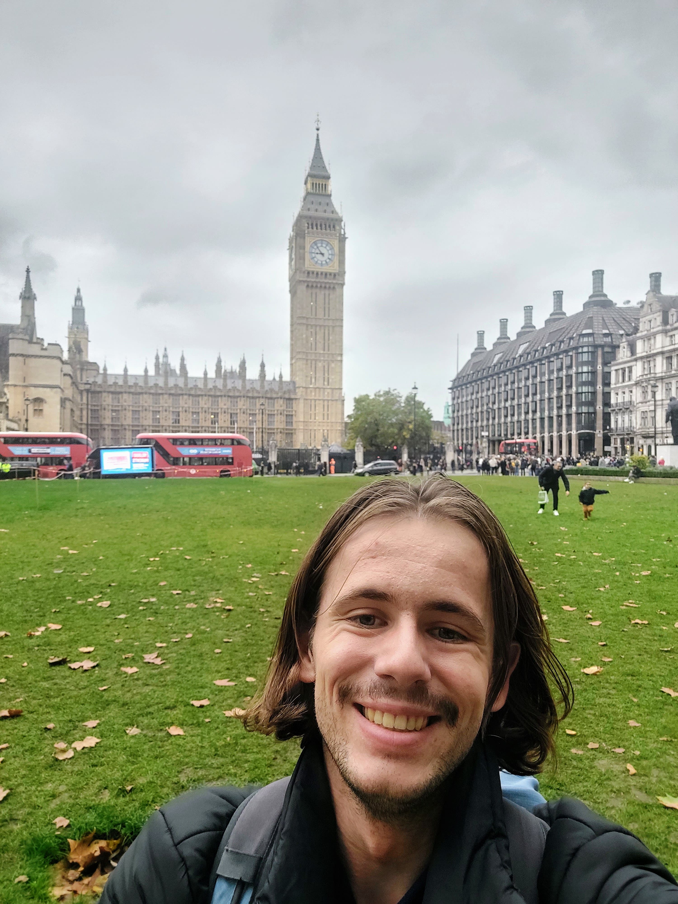
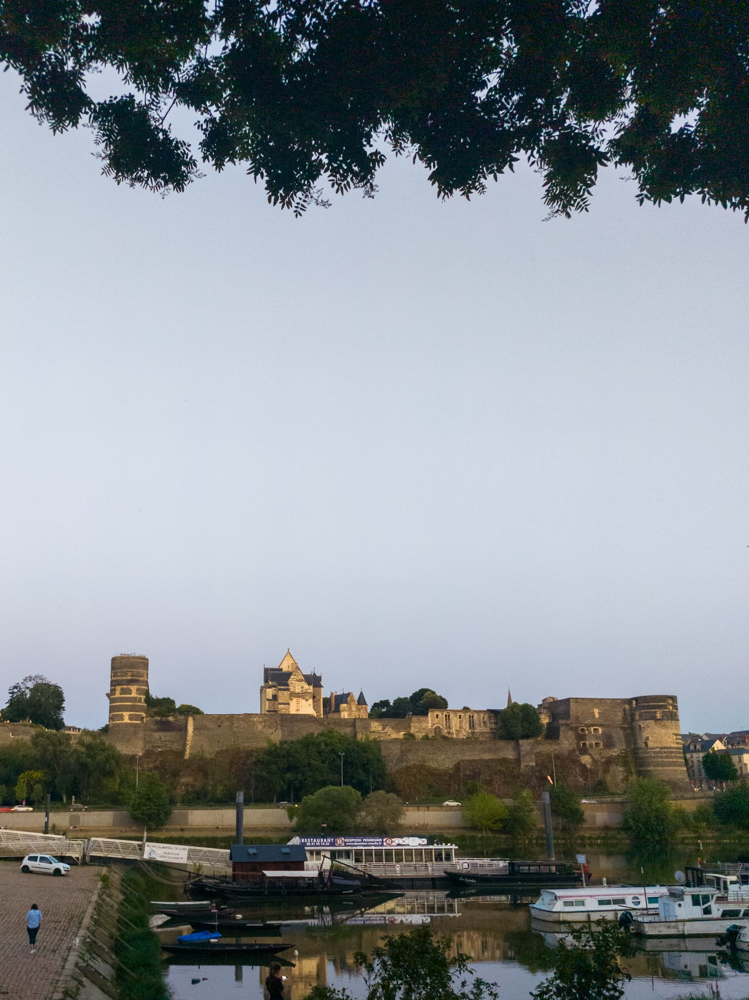
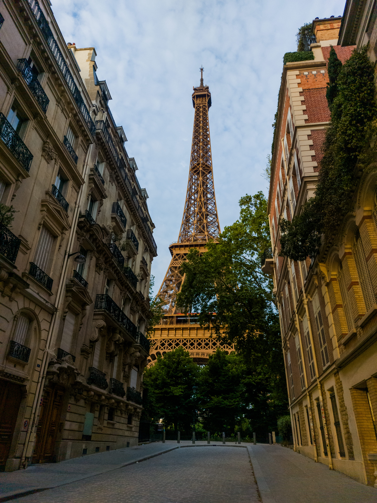
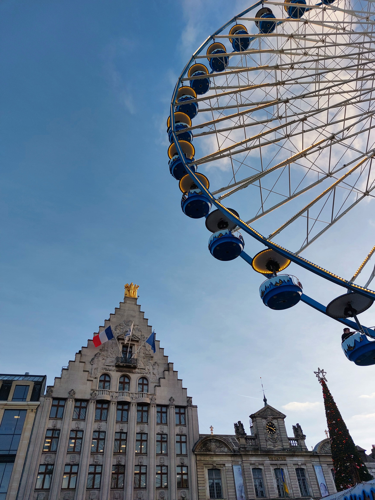

Goulven ROBIN
Créateur et moteur de TrainNomad
À 23 ans, je porte en moi une double fierté : celle d'être un Breton viscéralement attaché à ses terres, et celle d'être un Nomade du Rail, explorateur infatigable des lignes de chemin de fer.
Actuellement étudiant aux Arts et Métiers à Angers (76 An 224), cette formation forge la rigueur technique indispensable pour donner vie et excellence à ce projet qui me passionne profondément.

TGVmax, c'est la liberté, mais sans une carte claire, c'était une vraie chasse au trésor. J'ai simplement codé l'outil que mes potes et moi rêvions d'avoir pour enfin profiter à fond de notre abonnement.Goulven ROBIN
Comment tout a commencé
Après avoir passé d'innombrables heures à parcourir la France grâce à la liberté offerte par l'abonnement TGVmax, une évidence s'est imposée. Le potentiel de ce mode de voyage est immense, mais l'expérience était entravée par une lacune frustrante : l'absence d'une carte centralisée, vivante, capable de dévoiler l'éventail complet des destinations disponibles.
C'est de ce constat qu'est né TrainNomad. Mon objectif était de transcender la complexité de TGVmax pour transformer la recherche de billets en une exploration inspirante — un défi galvanisant, où l'analyse de données rencontre la poésie du voyage.



L'Europe comme nouveau terrain de jeu
Après avoir cartographié les destinations TGVmax à travers la France, une ambition plus grande s'est naturellement imposée : pourquoi s'arrêter aux frontières ? L'Europe ferroviaire est un réseau gigantesque, reliant des centaines de villes en quelques heures, et pourtant elle reste difficile à appréhender dans sa globalité.
TrainNomad évolue donc pour devenir une boussole à l'échelle européenne, permettant à chaque voyageur de visualiser d'un seul coup d'œil l'ensemble des trajets accessibles depuis chez lui — qu'il parte de Bordeaux, de Lyon ou de Lille, vers Madrid, Berlin ou Prague.
Destinations connectées
à portée de rail
Des lacunes concrètes identifiées
Une visualisation fragmentée
La visualisation des trajets disponibles reste éclatée entre les plateformes : chaque pays possède ses propres codes, et aucune carte unifiée ne permet de voir l'ensemble du réseau ferroviaire comme un tout cohérent. Le voyageur doit jongler entre plusieurs sites pour construire un itinéraire simple.
Des correspondances opaques
Les informations liées aux correspondances entre pays sont particulièrement difficiles à lire. Savoir qu'un trajet Paris-Berlin implique un changement à Francfort, avec un délai de correspondance réaliste, nécessite aujourd'hui de jongler entre plusieurs sites et plusieurs langues. C'est précisément ce vide que TrainNomad cherche à combler.
La correspondance internationale, le maillon manquant
La correspondance est le nœud central du voyage ferroviaire européen. Un retard à Paris peut compromettre une connexion à Bruxelles, qui elle-même conditionne un Eurostar vers Londres. TrainNomad ambitionne de rendre ces enchaînements lisibles et fiables : visualiser non seulement les destinations, mais les chaînes de trajets possibles, les temps de battement nécessaires, et les risques de rupture selon les opérateurs impliqués.
L'objectif est simple : que planifier un Paris-Lisbonne en train soit aussi intuitif que réserver un vol.
Départ
Paris Gare de Lyon
Correspondance
Francfort Hbf
⏱ 28 min de battement
Arrivée
Lisboa Santa Apolónia
Nos valeurs
L'exigence de l'ingénieur
En tant qu'ingénieur en devenir et fier Gadzart, je fais de la rigueur technique le moteur de l'innovation. Chaque ligne de code est pensée pour résoudre, avec élégance et efficacité, un problème quotidien des voyageurs.
Le souffle de l'explorateur
TrainNomad marie la méthode de l'ingénieur à l'audace de l'explorateur, prouvant que le rail est la voie d'avenir. Nous facilitons l'accès à des destinations emblématiques, de Paris à la sérénité mystique du Mont Saint-Michel.
L'engagement écologique
Chaque trajet en train évite en moyenne 8 fois plus de CO₂ qu'un vol équivalent. TrainNomad rend le voyage ferroviaire irrésistible en simplifiant la planification, pour convaincre chaque voyageur hésitant de laisser l'avion au sol.
La vision
Mon rêve est que TrainNomad devienne la boussole incontournable pour chaque voyageur ferroviaire en Europe. Il s'agit d'analyser, de sculpter et d'innover pour que la recherche fastidieuse de billets se métamorphose en une carte interactive d'opportunités, vibrant des destinations à portée de train. Notre horizon : rendre le voyage décarboné irrésistiblement accessible, en optimisant le temps et l'empreinte carbone de chaque aventure — d'un bout à l'autre du continent.
La feuille de route
TrainNomad est un projet vivant, en constante évolution.
Carte interactive TGVmax France
Visualisation de l'ensemble des trajets TGVmax disponibles en France, avec une carte interactive mise à jour en temps réel.
Réseaux ferroviaires européens
Intégration des grands opérateurs européens : Eurostar, ICE, Renfe, Trenitalia et bien d'autres, pour une couverture continentale complète.
Correspondances intelligentes & personnalisation
Suggestions intelligentes de correspondances multi-opérateurs, alertes de disponibilité, et personnalisation des voyages selon les préférences de chaque nomade du rail.
Prêt pour votre prochaine aventure ?
Rejoignez des milliers de voyageurs et découvrez toutes les destinations TGVmax sur notre carte interactive.